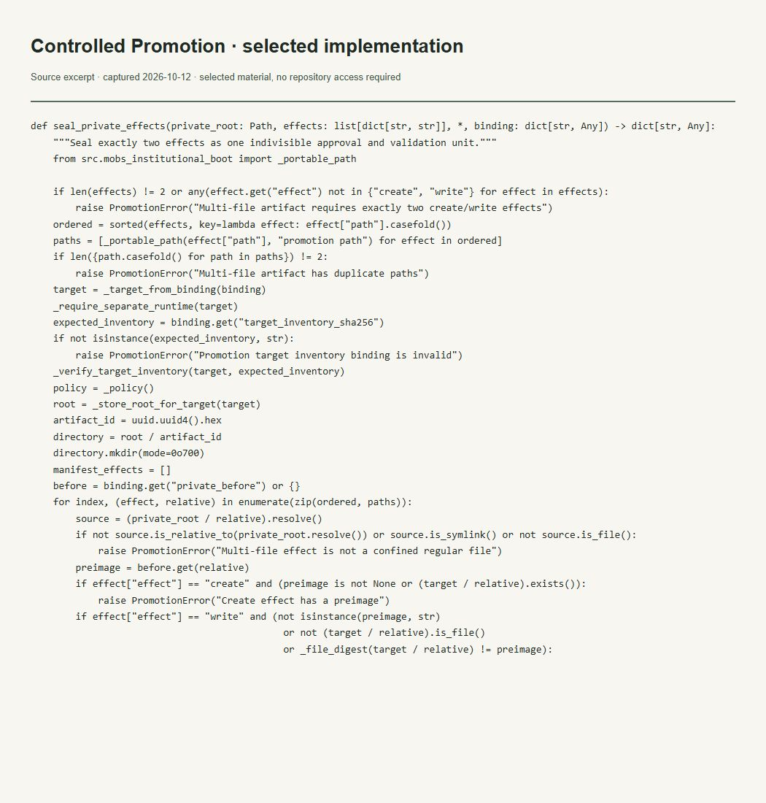

Evidências do trabalho
Trabalho privado e promoção controlada
O que esta evidência demonstra
Mostra selagem do delta de dois arquivos, verificação do inventário e preservação de conteúdo.

Ler transcrição literal acessível
def seal_private_effects(private_root: Path, effects: list[dict[str, str]], *, binding: dict[str, Any]) -> dict[str, Any]:
"""Seal exactly two effects as one indivisible approval and validation unit."""
from src.mobs_institutional_boot import _portable_path
if len(effects) != 2 or any(effect.get("effect") not in {"create", "write"} for effect in effects):
raise PromotionError("Multi-file artifact requires exactly two create/write effects")
ordered = sorted(effects, key=lambda effect: effect["path"].casefold())
paths = [_portable_path(effect["path"], "promotion path") for effect in ordered]
if len({path.casefold() for path in paths}) != 2:
raise PromotionError("Multi-file artifact has duplicate paths")
target = _target_from_binding(binding)
_require_separate_runtime(target)
expected_inventory = binding.get("target_inventory_sha256")
if not isinstance(expected_inventory, str):
raise PromotionError("Promotion target inventory binding is invalid")
_verify_target_inventory(target, expected_inventory)
policy = _policy()
root = _store_root_for_target(target)
artifact_id = uuid.uuid4().hex
directory = root / artifact_id
directory.mkdir(mode=0o700)
manifest_effects = []
before = binding.get("private_before") or {}
for index, (effect, relative) in enumerate(zip(ordered, paths)):
source = (private_root / relative).resolve()
if not source.is_relative_to(private_root.resolve()) or source.is_symlink() or not source.is_file():
raise PromotionError("Multi-file effect is not a confined regular file")
preimage = before.get(relative)
if effect["effect"] == "create" and (preimage is not None or (target / relative).exists()):
raise PromotionError("Create effect has a preimage")
if effect["effect"] == "write" and (not isinstance(preimage, str)
or not (target / relative).is_file()
or _file_digest(target / relative) != preimage):Contexto e limites
Parte selecionada do mecanismo. Não demonstra segurança universal.
A imagem é uma captura local de um recorte literal do arquivo verificado. Não é captura da interface do GitHub nem da aplicação em execução. O trecho permanece no idioma original.